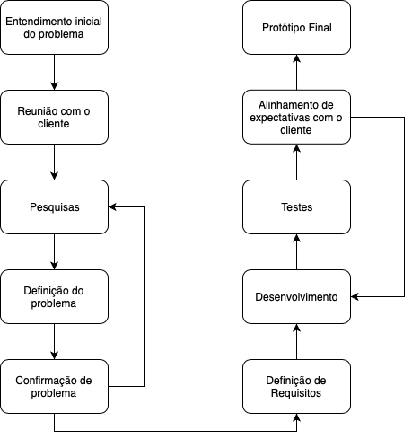

Métodos de Desenvolvimento
Diagrama de Software
Para a nossa fábrica de software, iremos usar o seguinte diagrama:

Entendimento do problema
Durante a fase de entendimento do problema, usamos algumas técnicas descritas no documento abaixo:

Fase de Ideação
Em andamento